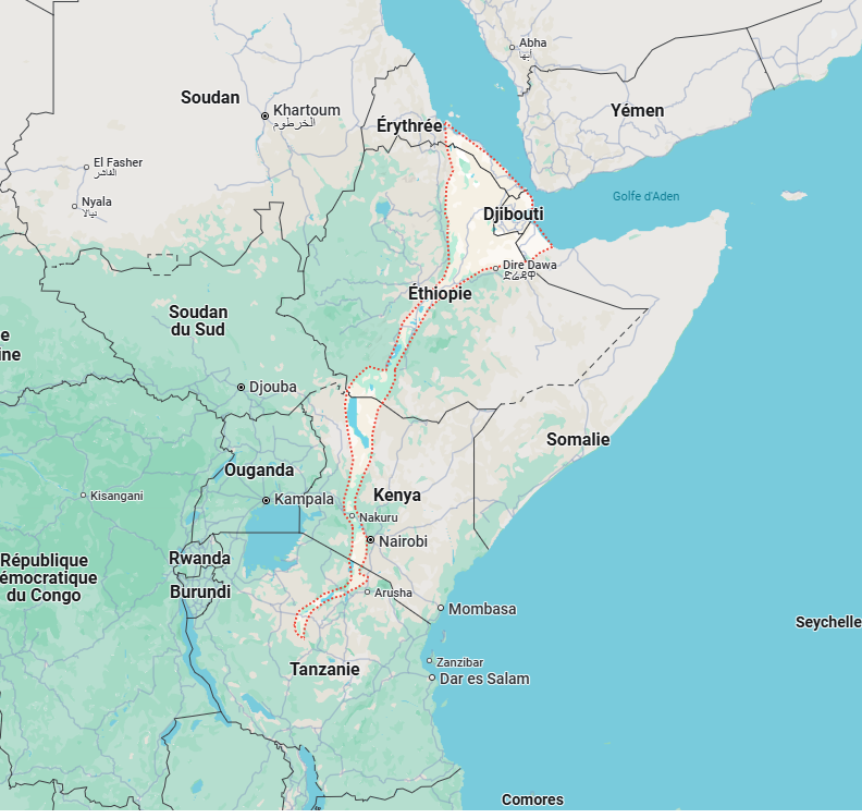
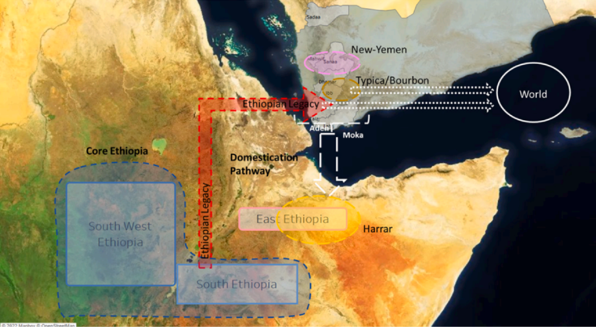
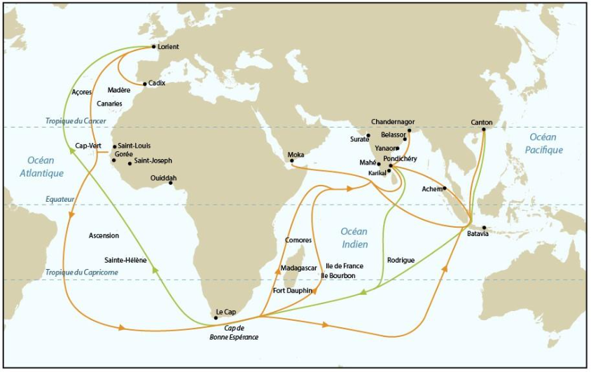
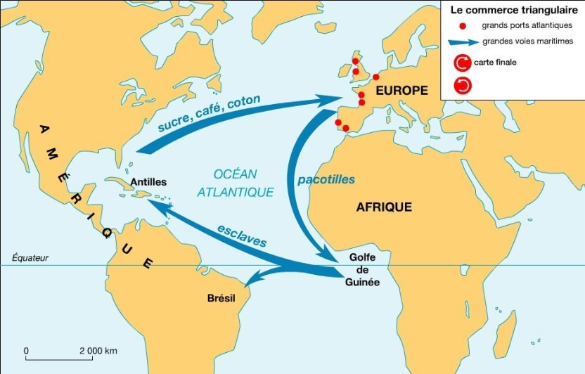
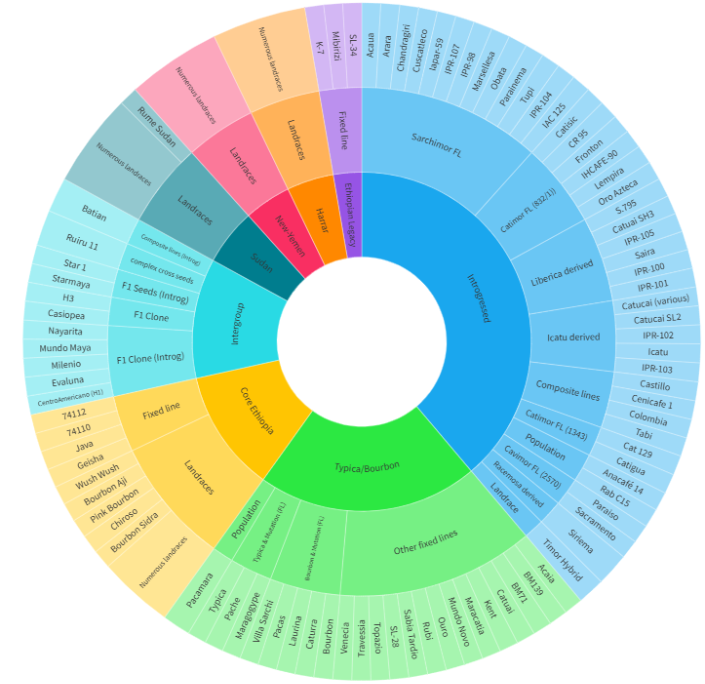

Du grain aux grandes routes : diffusion mondiale et construction d’une filière
Le café est l’une des marchandises les plus échangées de l’histoire humaine. Ce chapitre retrace sa diffusion mondiale, les routes commerciales qui l’ont propagé, les grandes étapes de l’amélioration génétique, et les enjeux contemporains auxquels la filière est confrontée. Les fondamentaux botaniques et taxonomiques sont traités au Chapitre 1
Origines biologiques de Coffea arabica
Période présumée et hybridation
Il y a entre 10 000 ans et 1 million d’années, quelque part dans la région de la vallée du Grand Rift, entre le Sud-Soudan et l’Ouest de l’Éthiopie, Coffea arabica a vu le jour. Cette espèce est une allotétraploïde issue d’une hybridation naturelle entre deux autres espèces : Coffea eugenioides et Coffea canephora. Bien que cette hybridation ait conféré à C. arabica des caractéristiques uniques, sa diversité génétique reste très faible, probablement due à des goulets d’étranglement évolutifs.

Vallée du Grand Rift
Diversité génétique et centres de domestication
Origine et domestication
Les forêts d’altitude d’Éthiopie et du Sud-Soudan constituent les habitats naturels de C. arabica. Au 15ᵉ siècle, les premières graines ont été introduites au Yémen, un centre majeur de domestication. Trois groupes génétiques clés se sont formés :
•Core Ethiopia : Population originelle de l’Éthiopie.
•Ethiopian Legacy : Groupe évoluant après son introduction au Yémen.
•Typica/Bourbon : Groupe qui s’est répandu mondialement.
Enjeu majeur : La transition de l’Éthiopie au Yémen a réduit de manière significative la diversité génétique.

Dispersion mondiale de Coffea arabica
Routes commerciales historiques
À partir du Yémen, deux grandes routes ont permis la diffusion de C. arabica :
•Route asiatique (17ᵉ siècle) : La première route a commencé en 1670 lorsqu’un pèlerin indien appelé Baba Budan a fait passer en contrebande des graines de café du Yémen vers l’Inde, notamment dans la région de Chikmagalur. Ces graines sont à la base de la population que les colons britanniques (au 19e siècle) nommeront plus tard Old Chiks. À peine quelques décennies plus tard, en 1696, quelques graines de cette population indienne furent introduites en Indonésie par les Hollandais. C’est la route de l’Inde vers l’Asie. Depuis l’Indonésie, en moins de 50 ans, quelques graines de café voyageront de l’Indonésie vers l’Europe puis vers les Caraïbes selon l’épopée du chevalier de Clieu (Claude, 2015; Lecomte, 1862) et s'est finalement répandu au Mexique, en Amérique centrale et en Amérique du Sud, y compris bien sûr au Brésil. Dans les Amériques, le cultivar unique qui en a résulté était Typica. On a longtemps déduit que Typica était également le seul café cultivé en Asie, car les graines introduites en Amérique provenaient d'Asie.
Cependant, une étude récente (Montagnon et al., 2024) indique que la diversité génétique de C. Arabica cultivée en Asie a été plus large qu'on ne le pensait auparavant. Quoi qu'il en soit, pendant 150 ans à partir du début du 18e siècle, L'histoire et la diversité génétique des cultures café arabica 11 le cultivar Typica régnera sans conteste sur la production de café à travers le monde…
Jusqu’à ce que Bourbon vienne contester cette suprématie, notamment dans les
Amériques.

Route commerciale de la compagnie des Indes
•Route de Bourbon (18ᵉ siècle) : Vers 1715, des voyageurs français introduisirent quelques graines de café du Yémen dans l'actuelle île française de La Réunion, qui s'appelait alors l'île Bourbon, du nom de famille des rois de France. Cela donnerait naissance au cultivar Bourbon (voir Lécolier, Besse, Charrier, Tchakaloff et Noirot, 200) (pour une revue historique). Ce cultivar Bourbon n'est resté à la Réunion que pendant plus d'un siècle et a finalement été introduit au Brésil au milieu du XIXe siècle. Parce qu'il était plus productif et robuste que le Typica, le Bourbon a rapidement remplacé le Typica - mais dans quelques rares endroits comme dans les îles des Caraïbes - qui était présent aux Amériques depuis le début du XVIIIe siècle (Carvalho, 1985). Carvalho, Monaco, Alves et Fazuoli (1973)il a été rapporté que le Bourbon pouvait produire jusqu'à deux fois plus que le Typica (simplement appelé « Arabica » au Brésil).

Routes commerciales française et européenne au 18ème
Variétés emblématiques : Typica (route asiatique) et Bourbon (route de La Réunion).
Cas particulier : Le café Gesha, issu d’une évasion d’Éthiopie, a redéfini le café de spécialité grâce à sa qualité exceptionnelle.
Grandes étapes de l’amélioration génétique
Sélection massale (19ᵉ–20ᵉ siècles)
La sélection massale a permis d’améliorer les populations existantes en favorisant les arbres les plus productifs. Par exemple, Caturra, une mutation naturelle de Bourbon, est devenue un standard dans plusieurs régions.
Hybrides Timor et introgression (1927)
Un hybride naturel entre C. arabica et C. canephora a été identifié sur l’île de Timor. Ce croisement a conduit à l’introgression de gènes de résistance dans de nouvelles variétés comme Catimor et Sarchimor.
Hybrides F1 (fin 20ᵉ siècle)
Ces croisements de première génération offrent un rendement jusqu’à 40 % supérieur et sont mieux adaptés aux systèmes agroforestiers, mais leurs coûts élevés limitent leur diffusion.
Enjeux et opportunités pour Coffea arabica
Face au changement climatique
Le réchauffement climatique menace directement la culture du café Arabica. Les efforts actuels se concentrent sur le développement de variétés résilientes adaptées aux systèmes agroforestiers, qui offrent une meilleure durabilité.
Qualité en tasse
Deux approches dominent :
•Maintenir la qualité standard tout en améliorant les rendements.
•Produire des cafés d’exception à très haute valeur ajoutée, souvent issus de variétés éthiopiennes.
Conservation génétique
Trois groupes génétiques sous-valorisés (South Sudan, Harrar et New-Yemen) représentent des ressources inexplorées pour améliorer la résilience et la diversité des variétés cultivées.
Conclusion
Malgré ses limites génétiques, Coffea arabica offre des perspectives prometteuses pour relever les défis liés au climat, à la qualité et aux rendements. La conservation des ressources génétiques est essentielle pour l’avenir de cette espèce.

La roue des cultivars de café Arabica RD2 Vision
Lexique
•Allotétraploïde : Organisme possédant quatre jeux de chromosomes, issus de l’hybridation entre deux espèces différentes.
•Hybridation : Croisement entre deux espèces ou variétés pour mélanger leurs caractéristiques génétiques.
•Domestication : La domestication est généralement considérée comme le point final d'un continuum qui commence par l'exploitation des plantes sauvages, se poursuit par la culture de plantes sélectionnées dans la nature mais pas encore génétiquement différentes des plantes sauvages, et se termine par la fixation, par la sélection humaine, des différences morphologiques et donc génétiques qui distinguent un animal domestique de son ancêtre sauvage. Ces différences constituent le syndrome de domestication et rendent généralement l'animal domestique moins capable de survivre dans la nature, dépendant ainsi de l'homme pour sa croissance et sa reproduction.
•Introgression : Transfert de gènes d’une espèce à une autre par hybridation et croisements successifs.
•Hybride F1 : Première génération issue du croisement de deux parents génétiquement différents, souvent caractérisée par une vigueur accrue.
•Agroforestier : Système agricole intégrant des arbres et des cultures pour optimiser les bénéfices écologiques et économiques.